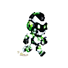

NEON JOOLIX RUNNER
SCORE:
0
BEST:
0

READY?
Press SPACE or tap to start
GAME OVER
0
Press SPACE or tap to restart
PAUSED
Press P or tap to resume
Start
Pause
Restart
Game Settings
Gravity
0.6
Speed Increment
0.004
Obstacle Frequency
1500ms
Initial Speed
6
SPACE
or
UP
to Jump
DOWN
to Duck
P
to Pause/Resume
JUMP